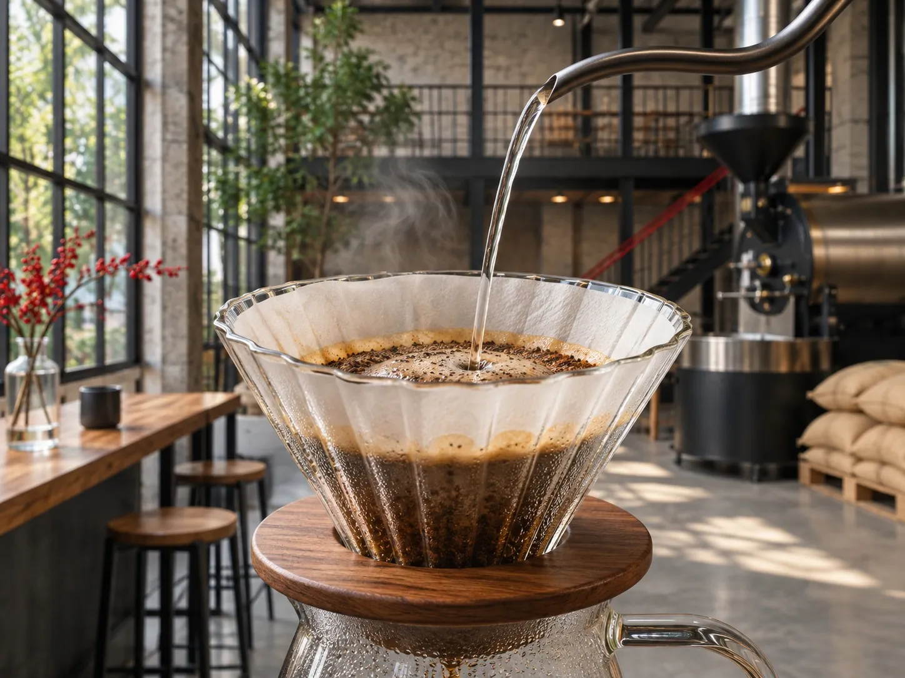
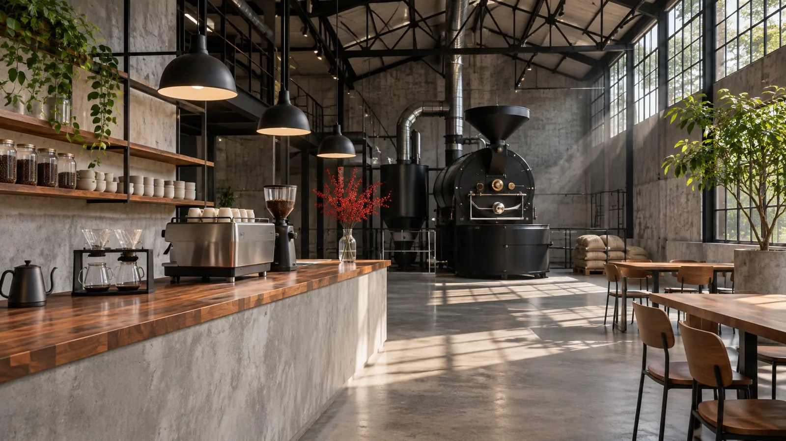

ABOUT US
どんな会社か
株式会社IMOMは、2016年に設立された会社です。 自家焙煎のスペシャルティコーヒーのお店と、障害のある方の就労支援の、2つの事業をしています。
Our Mission
ミッションは「誰もが生きやすい、寛容な社会をつくる」こと。働く人が、自分の関わった商品がお客様に届く実感を持てることを大切にしています。


ABOUT US
株式会社IMOMは、2016年に設立された会社です。 自家焙煎のスペシャルティコーヒーのお店と、障害のある方の就労支援の、2つの事業をしています。
ミッションは「誰もが生きやすい、寛容な社会をつくる」こと。働く人が、自分の関わった商品がお客様に届く実感を持てることを大切にしています。

公開されている情報から見える、この職場の特徴
公式の募集ページとInstagramで確認できることだけを、まとめています。
ハンドドリップの競技会で入賞したヘッドバリスタと、同じカウンターに立てます。
ドイツ製PROBATの焙煎機がある焙煎所で、焙煎の補助も担当します。
マネジメントの経験がなくても、半年ほどかけて段階的に成長できるとしています。
JOBS
コーヒーの抽出、接客、レジ、仕込み、清掃など、お店の運営全般。
自社焙煎の豆づくりを、焙煎所でサポートします。
地域のイベントの運営にも関わります。
将来の店舗責任者として、新しい仲間の育成も担当します。
WHERE
※ くわしい条件は、公式の募集ページでご確認ください。